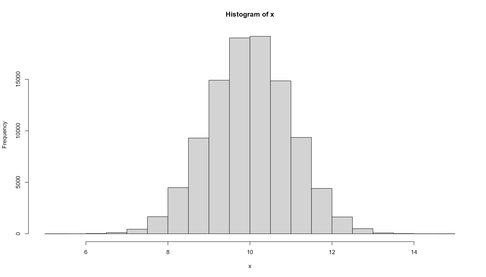

x <- 1:5
x <- c(1,2,3,4,5) # 上と同じプレゼミ2023
統計分析総復習
四則演算は+，-，*，/をつかう。 累乗は^か**を使う。
Rはオブジェクトと呼ばれる変数にいろんなものを代入し，操作する。 代入には<-を使う。
xに数字の1,2,3,4,5を代入してベクトルを作る。
変数に計算を加えることもできる。
以下ではaに1を代入し、bに4を代入して、aとbを足す、という演算を行っている。
Rにはいろんな関数が用意されている。 関数は関数名(引数)という形で使う。 引数に何を入れるかは関数によって異なるので、?関数名で表示されるヘルプを参照する。
ヘルプは英語ですが、難しくないので、読めるようになっておくと便利です。
mean()関数のヘルプだとArguments(引数)として、
x ：引数となるRオブジェクトとして、数値や論理値のベクトル、日付、などが取れるtrim: 平均を出す前に、上位と下位の何パーセントを切り捨てるかを指定するna.rm : TRUEにすると欠損値を無視して計算するの説明がある。
Rは基本関数でもいろいろできるけれど，外部のパッケージを用いて機能を拡張できるので，積極的に活用するのが望ましい
パッケージのインストールは，install.pacakge()を使う。 ほぼ必須のパッケージtidyverseをインストールしてみる。
インストールしたパッケージはlibrary()関数で読み出す。 他によく使うパッケージに，ggthemes，patchwork，knitr，kableExtra，modelsummaryなどがある。
まだインストールしてないものがあればエラーがでる。
成功していれば何も表示されません。
Rは，いろんなファイルを読み込むことができるが，基本はcsvファイルが望ましい。 tidyverseのパッケージ群の1つであるreadrパッケージのread_csv()関数を使ってCSVファイルを読み込む。 以下では，読み込んだデータをオブジェクトdfに代入している。
[1] "year" "ku" "kun" "status" "name"
[6] "party" "party_code" "previous" "wl" "voteshare"
[11] "age" "nocand" "rank" "vote" "eligible"
[16] "turnout" "exp" "expm" "vs" "exppv"
[21] "smd" "party_jpn" read_csv()で読み込んだデータはdata.frameという型になる。
Excelファイルを読み込むには，readxlパッケージのread_excel()関数を使うのが便利である。
読み込んだデータを確認するために，次のような関数が使える。
names() データフレームの変数の名前を返すglimpse() より詳しい記述統計量を返す。データをRに読み込ませることができれば，あとはデータを調理するだけ。
作図に用いるggplot2パッケージは，Macで文字化けを起こすので，おまじないとして，以下のコマンドを実行しておきます。
データの特徴を表す統計量を記述統計量と呼び，平均，中央値，標準偏差，最大値，最小値，四分位点などがあり，それらを計算する基本関数が用意されている。
mean() 平均median() 中央値sd() 標準偏差max() 最大値min() 最小値quantile() 四分位点mean()などの関数は，引数にベクトルをとる。 しかしそのベクトルに欠損値NAがあるとエラーが返ってくるため，欠損値を無視して計算してもらうため，na.rm = TRUEという引数を追加する。
記述統計の表を作成するには，summary()関数を使う。
| year | ku | kun | status | name | party | party_code | previous | wl | voteshare | age | nocand | rank | vote | eligible | turnout | exp | expm | vs | exppv | smd | party_jpn | |
|---|---|---|---|---|---|---|---|---|---|---|---|---|---|---|---|---|---|---|---|---|---|---|
| Min. :1996 | Length:8803 | Min. : 1.000 | Length:8803 | Length:8803 | Length:8803 | Min. : 1.00 | Min. : 0.000 | Length:8803 | Min. : 0.10 | Min. :25.0 | Min. :2.000 | Min. :1.000 | Min. : 177 | Min. :115013 | Min. :48.90 | Min. : 535 | Min. : 0.0005 | Min. :0.0010 | Min. : 0.0013 | Length:8803 | Length:8803 | |
| 1st Qu.:2000 | Class :character | 1st Qu.: 2.000 | Class :character | Class :character | Class :character | 1st Qu.: 1.00 | 1st Qu.: 0.000 | Class :character | 1st Qu.: 8.90 | 1st Qu.:43.0 | 1st Qu.:3.000 | 1st Qu.:1.000 | 1st Qu.: 18240 | 1st Qu.:269294 | 1st Qu.:57.80 | 1st Qu.: 2803566 | 1st Qu.: 2.8036 | 1st Qu.:0.0890 | 1st Qu.: 8.1711 | Class :character | Class :character | |
| Median :2005 | Mode :character | Median : 4.000 | Mode :character | Mode :character | Mode :character | Median : 3.00 | Median : 0.000 | Mode :character | Median :25.76 | Median :51.0 | Median :4.000 | Median :2.000 | Median : 49021 | Median :330188 | Median :62.70 | Median : 6541589 | Median : 6.5416 | Median :0.2576 | Median : 18.7049 | Mode :character | Mode :character | |
| Mean :2007 | NA | Mean : 5.738 | NA | NA | NA | Mean : 12.04 | Mean : 1.712 | NA | Mean :27.08 | Mean :50.9 | Mean :3.956 | Mean :2.477 | Mean : 54911 | Mean :325666 | Mean :62.96 | Mean : 7542700 | Mean : 7.5427 | Mean :0.2708 | Mean : 23.0375 | NA | NA | |
| 3rd Qu.:2012 | NA | 3rd Qu.: 8.000 | NA | NA | NA | 3rd Qu.: 8.00 | 3rd Qu.: 3.000 | NA | 3rd Qu.:42.90 | 3rd Qu.:59.0 | 3rd Qu.:5.000 | 3rd Qu.:3.000 | 3rd Qu.: 86494 | 3rd Qu.:390637 | 3rd Qu.:67.53 | 3rd Qu.:11044485 | 3rd Qu.:11.0445 | 3rd Qu.:0.4290 | 3rd Qu.: 33.4005 | NA | NA | |
| Max. :2017 | NA | Max. :25.000 | NA | NA | NA | Max. :100.00 | Max. :20.000 | NA | Max. :95.30 | Max. :94.0 | Max. :9.000 | Max. :9.000 | Max. :201461 | Max. :495212 | Max. :83.80 | Max. :27462362 | Max. :27.4624 | Max. :0.9530 | Max. :119.2479 | NA | NA | |
| NA | NA | NA | NA | NA | NA | NA | NA | NA | NA | NA's :5 | NA | NA | NA | NA's :959 | NA's :1895 | NA's :2043 | NA's :2043 | NA | NA's :2043 | NA | NA |
Rではパイプ演算子|>を使って，処理をつなげることができる。 x |> f()はf(x)と同じ意味になるので，引数を関数の外で指定することができる。
と
は同じ結果を返しますが，後者のほうが見やすい。
作図にはtidyverseのggplot2パッケージを使う。 ggplot2パッケージは，以下の関数を使って図を作成する。
ggplot() : 作図の基礎になるデータフレームを指定aes() : 軸に当てる変数を指定geom_***() : 図の種類を指定注意点として，ggplot()の引数にはdata.frameしか受け付けないことです。
作図の種類として以下のものがよく使う。
geom_histogram() : ヒストグラムgeom_boxplot() : 箱ひげ図geom_point() : 散布図geom_bar() : 棒グラフgeom_line() : 折れ線グラフggplot()の引数にdfを入れ，aes()の引数に変数を1つを指定し，ヒストグラムを作成するgeom_histogram()を使う。
グループごとに箱ひげ図を作成するなら，aes()の中で，group =とかcolor =で指定する。
dnorm() : 正規分布の確率密度関数を計算rnorm() : 正規分布から乱数を発生させるcurve() : 関数をグラフに描画hist() : ヒストグラムを作成するbreaks = 20 : ヒストグラムの棒の数を指定統計学とは、標本から未知の母集団の特性をどのように探求するかについて研究する学問
作ったお味噌汁の味を確かめるために全部飲む必要は無い。
パン屋さんが作る食パンの真の重さ(母数)は分からないけど、パン屋さんで毎日買ってきた食パンの重さの平均(標本平均)は分かる。 でも、店先にたくさん並んでいる食パンのどれを選んで買うかによって、標本平均は変わる。
統計的検定とは，母集団の母数である母平均や母分散を，母集団から無作為抽出した標本から計算された標本平均や標本分散で推定することである。
母平均10、母標準偏差1の分布をもつ母集団を作る。
これが母集団となる正規分布
母集団から標本サイズ100の標本を1つ抽出する。
平均値は9.9488225で、母平均\(10\)と一致しない。 この差を誤差という。
標本サイズ100の標本を1000回抽出して、1000個の標本平均を計算し、ヒストグラムにする。 繰り返しの回数をtrialとする。 繰り返しにはreplicate()関数を使う。
標本平均の平均は、9.9988835で、母平均\(10\)に近い。

ある標本から計算された標本平均が母平均と異なっている、ということを統計的に主張するために検定を行う。ここでは\(t\)検定を行う。
\(t\)検定にはt.test()関数を使う。